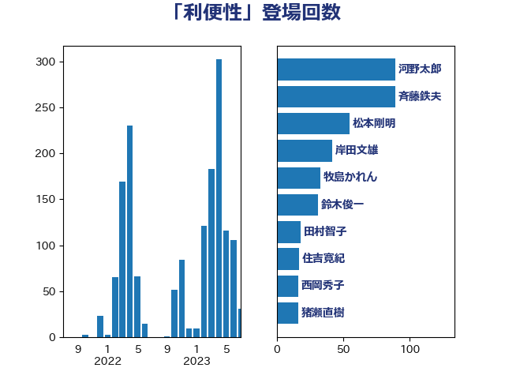

単語「利便性」

| 河野太郎 | 自由民主党 | 89 回 |
| 斉藤鉄夫 | 公明党 | 89 回 |
| 松本剛明 | 自由民主党 | 55 回 |
| 岸田文雄 | 自由民主党 | 42 回 |
| 牧島かれん | 自由民主党 | 33 回 |
| 鈴木俊一 | 自由民主党 | 31 回 |
| 田村智子 | 日本共産党 | 18 回 |
| 住吉寛紀 | 日本維新の会 | 17 回 |
| 西岡秀子 | 国民民主党 | 16 回 |
| 猪瀬直樹 | 日本維新の会 | 16 回 |
| 後藤茂之 | 自由民主党 | 16 回 |
| 古川禎久 | 自由民主党 | 15 回 |
| 岸真紀子 | 立憲民主党 | 14 回 |
| 岬麻紀 | 日本維新の会 | 13 回 |
| 山本剛正 | 日本維新の会 | 13 回 |
| 石井苗子 | 日本維新の会 | 11 回 |
| 柳ヶ瀬裕文 | 日本維新の会 | 11 回 |
| 若宮健嗣 | 自由民主党 | 10 回 |
| 岡田直樹 | 自由民主党 | 10 回 |
| 中司宏 | 日本維新の会 | 10 回 |
| 上田勇 | 公明党 | 10 回 |
| 藤巻健太 | 日本維新の会 | 9 回 |
| 加藤勝信 | 自由民主党 | 9 回 |
| 高木かおり | 日本維新の会 | 8 回 |
| 輿水恵一 | 公明党 | 8 回 |
| 川合孝典 | 国民民主党 | 8 回 |
| 安江伸夫 | 公明党 | 8 回 |
| 金子恭之 | 自由民主党 | 7 回 |
| 礒崎哲史 | 国民民主党 | 7 回 |
| 林芳正 | 自由民主党 | 7 回 |
| 日下正喜 | 公明党 | 7 回 |
| 平林晃 | 公明党 | 7 回 |
| 大口善徳 | 公明党 | 7 回 |
| 高橋千鶴子 | 日本共産党 | 6 回 |
| 石橋林太郎 | 自由民主党 | 6 回 |
| 杉本和巳 | 日本維新の会 | 6 回 |
| 杉尾秀哉 | 立憲民主党 | 6 回 |
| 木村英子 | れいわ新選組 | 6 回 |
| 平木大作 | 公明党 | 6 回 |
| 小川淳也 | 立憲民主党 | 6 回 |
| 伊藤岳 | 日本共産党 | 6 回 |
| 中川康洋 | 公明党 | 6 回 |
| 齋藤健 | 自由民主党 | 5 回 |
| 音喜多駿 | 日本維新の会 | 5 回 |
| 長谷川英晴 | 自由民主党 | 5 回 |
| 芳賀道也 | 国民民主党 | 5 回 |
| 緑川貴士 | 立憲民主党 | 5 回 |
| 竹詰仁 | 国民民主党 | 5 回 |
| 牧山ひろえ | 立憲民主党 | 5 回 |
| 山田太郎 | 自由民主党 | 5 回 |
| 山本博司 | 公明党 | 5 回 |
| 尾崎正直 | 自由民主党 | 5 回 |
| 太田房江 | 自由民主党 | 5 回 |
| 堀場幸子 | 日本維新の会 | 5 回 |
| 加田裕之 | 自由民主党 | 5 回 |
| 三反園訓 | 無所属 | 5 回 |
| 鈴木義弘 | 国民民主党 | 4 回 |
| 足立康史 | 日本維新の会 | 4 回 |
| 萩生田光一 | 自由民主党 | 4 回 |
| 福田昭夫 | 立憲民主党 | 4 回 |
| 石井章 | 日本維新の会 | 4 回 |
| 田畑裕明 | 自由民主党 | 4 回 |
| 田村まみ | 国民民主党 | 4 回 |
| 田所嘉徳 | 自由民主党 | 4 回 |
| 田中昌史 | 自由民主党 | 4 回 |
| 津島淳 | 自由民主党 | 4 回 |
| 川田龍平 | 立憲民主党 | 4 回 |
| 尾身朝子 | 自由民主党 | 4 回 |
| 宗清皇一 | 自由民主党 | 4 回 |
| 大家敏志 | 自由民主党 | 4 回 |
| 大串正樹 | 自由民主党 | 4 回 |
| 吉川赳 | 無所属 | 4 回 |
| 古賀之士 | 立憲民主党 | 4 回 |
| 加藤鮎子 | 自由民主党 | 4 回 |
| 伊藤渉 | 公明党 | 4 回 |
| 五十嵐清 | 自由民主党 | 4 回 |
| おおつき紅葉 | 立憲民主党 | 4 回 |
| 高橋光男 | 公明党 | 3 回 |
| 阿部司 | 日本維新の会 | 3 回 |
| 遠藤良太 | 日本維新の会 | 3 回 |
| 豊田俊郎 | 自由民主党 | 3 回 |
| 西村康稔 | 自由民主党 | 3 回 |
| 竹内譲 | 公明党 | 3 回 |
| 湯原俊二 | 立憲民主党 | 3 回 |
| 沢田良 | 日本維新の会 | 3 回 |
| 横山信一 | 公明党 | 3 回 |
| 森屋隆 | 立憲民主党 | 3 回 |
| 梅村聡 | 日本維新の会 | 3 回 |
| 新垣邦男 | 立憲民主党 | 3 回 |
| 斎藤アレックス | 国民民主党 | 3 回 |
| 徳永久志 | 無所属 | 3 回 |
| 岡本あき子 | 立憲民主党 | 3 回 |
| 山添拓 | 日本共産党 | 3 回 |
| 山口那津男 | 公明党 | 3 回 |
| 山下芳生 | 日本共産党 | 3 回 |
| 小沼巧 | 立憲民主党 | 3 回 |
| 小森卓郎 | 自由民主党 | 3 回 |
| 小林史明 | 自由民主党 | 3 回 |
| 宮本岳志 | 日本共産党 | 3 回 |
| 堤かなめ | 立憲民主党 | 3 回 |
| 和田義明 | 自由民主党 | 3 回 |
| 古屋範子 | 公明党 | 3 回 |
| 井原巧 | 自由民主党 | 3 回 |
| 中谷一馬 | 立憲民主党 | 3 回 |
| 中川貴元 | 自由民主党 | 3 回 |
| 中川宏昌 | 公明党 | 3 回 |
| 三宅伸吾 | 自由民主党 | 3 回 |
| 高木啓 | 自由民主党 | 2 回 |
| 馬場雄基 | 立憲民主党 | 2 回 |
| 阿部知子 | 立憲民主党 | 2 回 |
| 鎌田さゆり | 立憲民主党 | 2 回 |
| 金子恵美 | 立憲民主党 | 2 回 |
| 谷川とむ | 自由民主党 | 2 回 |
| 西銘恒三郎 | 自由民主党 | 2 回 |
| 藤丸敏 | 自由民主党 | 2 回 |
| 舟山康江 | 国民民主党 | 2 回 |
| 羽生田俊 | 自由民主党 | 2 回 |
| 神津たけし | 立憲民主党 | 2 回 |
| 石井拓 | 自由民主党 | 2 回 |
| 石井啓一 | 公明党 | 2 回 |
| 矢倉克夫 | 公明党 | 2 回 |
| 田中健 | 国民民主党 | 2 回 |
| 甘利明 | 自由民主党 | 2 回 |
| 渡辺猛之 | 自由民主党 | 2 回 |
| 渡辺周 | 立憲民主党 | 2 回 |
| 清水貴之 | 日本維新の会 | 2 回 |
| 清水真人 | 自由民主党 | 2 回 |
| 浅野哲 | 国民民主党 | 2 回 |
| 江島潔 | 自由民主党 | 2 回 |
| 永岡桂子 | 自由民主党 | 2 回 |
| 橋本岳 | 自由民主党 | 2 回 |
| 榛葉賀津也 | 国民民主党 | 2 回 |
| 本村伸子 | 日本共産党 | 2 回 |
| 早坂敦 | 日本維新の会 | 2 回 |
| 平沼正二郎 | 自由民主党 | 2 回 |
| 小野泰輔 | 日本維新の会 | 2 回 |
| 小沢雅仁 | 立憲民主党 | 2 回 |
| 寺田稔 | 自由民主党 | 2 回 |
| 守島正 | 日本維新の会 | 2 回 |
| 天畠大輔 | れいわ新選組 | 2 回 |
| 塩川鉄也 | 日本共産党 | 2 回 |
| 堂込麻紀子 | 無所属 | 2 回 |
| 坂本祐之輔 | 立憲民主党 | 2 回 |
| 国光あやの | 自由民主党 | 2 回 |
| 和田政宗 | 自由民主党 | 2 回 |
| 吉田宣弘 | 公明党 | 2 回 |
| 吉田とも代 | 日本維新の会 | 2 回 |
| 倉林明子 | 日本共産党 | 2 回 |
| 佐々木さやか | 公明党 | 2 回 |
| 仁木博文 | 無所属 | 2 回 |
| 井上哲士 | 日本共産党 | 2 回 |
| 齊藤健一郎 | 無所属 | 1 回 |
| 黄川田仁志 | 自由民主党 | 1 回 |
| 鶴保庸介 | 自由民主党 | 1 回 |
| 馬場成志 | 自由民主党 | 1 回 |
| 青島健太 | 日本維新の会 | 1 回 |
| 長谷川淳二 | 自由民主党 | 1 回 |
| 鈴木隼人 | 自由民主党 | 1 回 |
| 鈴木敦 | 国民民主党 | 1 回 |
| 野田聖子 | 自由民主党 | 1 回 |
| 野中厚 | 自由民主党 | 1 回 |
| 越智俊之 | 自由民主党 | 1 回 |
| 赤澤亮正 | 自由民主党 | 1 回 |
| 赤木正幸 | 日本維新の会 | 1 回 |
| 谷田川元 | 立憲民主党 | 1 回 |
| 谷合正明 | 公明党 | 1 回 |
| 谷公一 | 自由民主党 | 1 回 |
| 西田昭二 | 自由民主党 | 1 回 |
| 藤原崇 | 自由民主党 | 1 回 |
| 蓮舫 | 立憲民主党 | 1 回 |
| 葉梨康弘 | 自由民主党 | 1 回 |
| 落合貴之 | 立憲民主党 | 1 回 |
| 荒井優 | 立憲民主党 | 1 回 |
| 自見はなこ | 自由民主党 | 1 回 |
| 羽田次郎 | 立憲民主党 | 1 回 |
| 米山隆一 | 立憲民主党 | 1 回 |
| 竹内真二 | 公明党 | 1 回 |
| 窪田哲也 | 公明党 | 1 回 |
| 稲津久 | 公明党 | 1 回 |
| 秋野公造 | 公明党 | 1 回 |
| 福島伸享 | 無所属 | 1 回 |
| 石田昌宏 | 自由民主党 | 1 回 |
| 石川大我 | 立憲民主党 | 1 回 |
| 石垣のりこ | 立憲民主党 | 1 回 |
| 石井浩郎 | 自由民主党 | 1 回 |
| 石井正弘 | 自由民主党 | 1 回 |
| 田島麻衣子 | 立憲民主党 | 1 回 |
| 田名部匡代 | 立憲民主党 | 1 回 |
| 片山大介 | 日本維新の会 | 1 回 |
| 熊谷裕人 | 立憲民主党 | 1 回 |
| 源馬謙太郎 | 立憲民主党 | 1 回 |
| 浜田聡 | NHK党 | 1 回 |
| 浜口誠 | 国民民主党 | 1 回 |
| 浅田均 | 日本維新の会 | 1 回 |
| 池下卓 | 日本維新の会 | 1 回 |
| 永井学 | 自由民主党 | 1 回 |
| 比嘉奈津美 | 自由民主党 | 1 回 |
| 武村展英 | 自由民主党 | 1 回 |
| 橘慶一郎 | 自由民主党 | 1 回 |
| 森田俊和 | 立憲民主党 | 1 回 |
| 森本真治 | 立憲民主党 | 1 回 |
| 森山浩行 | 立憲民主党 | 1 回 |
| 柘植芳文 | 自由民主党 | 1 回 |
| 枝野幸男 | 立憲民主党 | 1 回 |
| 松野博一 | 自由民主党 | 1 回 |
| 東徹 | 日本維新の会 | 1 回 |
| 本田顕子 | 自由民主党 | 1 回 |
| 本庄知史 | 立憲民主党 | 1 回 |
| 末次精一 | 立憲民主党 | 1 回 |
| 末松信介 | 自由民主党 | 1 回 |
| 木村次郎 | 自由民主党 | 1 回 |
| 斎藤洋明 | 自由民主党 | 1 回 |
| 庄子賢一 | 公明党 | 1 回 |
| 市村浩一郎 | 日本維新の会 | 1 回 |
| 工藤彰三 | 自由民主党 | 1 回 |
| 川崎ひでと | 自由民主党 | 1 回 |
| 岡本三成 | 公明党 | 1 回 |
| 山際大志郎 | 自由民主党 | 1 回 |
| 山田勝彦 | 立憲民主党 | 1 回 |
| 山本左近 | 自由民主党 | 1 回 |
| 山崎誠 | 立憲民主党 | 1 回 |
| 山崎正恭 | 公明党 | 1 回 |
| 山口壯 | 自由民主党 | 1 回 |
| 山口俊一 | 自由民主党 | 1 回 |
| 山井和則 | 立憲民主党 | 1 回 |
| 山下雄平 | 自由民主党 | 1 回 |
| 小野田紀美 | 自由民主党 | 1 回 |
| 小西洋之 | 立憲民主党 | 1 回 |
| 小池晃 | 日本共産党 | 1 回 |
| 小林鷹之 | 自由民主党 | 1 回 |
| 小島敏文 | 自由民主党 | 1 回 |
| 小寺裕雄 | 自由民主党 | 1 回 |
| 小宮山泰子 | 立憲民主党 | 1 回 |
| 小倉將信 | 自由民主党 | 1 回 |
| 宮崎勝 | 公明党 | 1 回 |
| 太栄志 | 立憲民主党 | 1 回 |
| 大野泰正 | 自由民主党 | 1 回 |
| 大西健介 | 立憲民主党 | 1 回 |
| 大島九州男 | れいわ新選組 | 1 回 |
| 塩村あやか | 立憲民主党 | 1 回 |
| 塩崎彰久 | 自由民主党 | 1 回 |
| 城井崇 | 立憲民主党 | 1 回 |
| 坂井学 | 自由民主党 | 1 回 |
| 吉田久美子 | 公明党 | 1 回 |
| 吉川沙織 | 立憲民主党 | 1 回 |
| 古賀篤 | 自由民主党 | 1 回 |
| 古川直季 | 自由民主党 | 1 回 |
| 古川康 | 自由民主党 | 1 回 |
| 古川俊治 | 自由民主党 | 1 回 |
| 友納理緒 | 自由民主党 | 1 回 |
| 北側一雄 | 公明党 | 1 回 |
| 勝目康 | 自由民主党 | 1 回 |
| 加藤竜祥 | 自由民主党 | 1 回 |
| 前川清成 | 日本維新の会 | 1 回 |
| 保岡宏武 | 自由民主党 | 1 回 |
| 伊藤孝恵 | 国民民主党 | 1 回 |
| 伊波洋一 | 無所属 | 1 回 |
| 伊東信久 | 日本維新の会 | 1 回 |
| 仁比聡平 | 日本共産党 | 1 回 |
| 中野洋昌 | 公明党 | 1 回 |
| 中谷真一 | 自由民主党 | 1 回 |
| 中西健治 | 自由民主党 | 1 回 |
| 中村裕之 | 自由民主党 | 1 回 |
| 中島克仁 | 立憲民主党 | 1 回 |
| 下野六太 | 公明党 | 1 回 |
| 上野賢一郎 | 自由民主党 | 1 回 |
| 上田清司 | 国民民主党 | 1 回 |
| 上月良祐 | 自由民主党 | 1 回 |
| 上川陽子 | 自由民主党 | 1 回 |
| 三浦信祐 | 公明党 | 1 回 |
| 三木圭恵 | 日本維新の会 | 1 回 |
| 一谷勇一郎 | 日本維新の会 | 1 回 |
| ながえ孝子 | 無所属 | 1 回 |